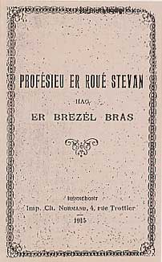

Dans les différents cas, on retrouve des vers et passages entiers semblables et imputés aux uns comme aux autres. Ainsi, chez Louis Philippe (Loeiz Philip):
"Sur le chemin du Faouët, il y aura de grands chemins se coupant et se recoupant. Tous seront rougis du sang des soldats."
Il disait aussi, semblant annoncer les troubles de la Révolution: "La guerre contre er walen (?) nous détruira... Il n’y aura plus de prêtres ni de sœurs. Les églises serviront de salles de danse...Viendra le temps où il y aura une brume sur le pays. Les gens resteront trois ans sans récolter de blé...Les gens seront heureux. On ne reconnaîtra plus les riches des pauvres mais, après cette guerre, la vie sera difficile pour ceux qui survivront…."

ER ROUE STEVAN - LE ROI ETIENNE

Il convient enfin de parler ici d'" Er roue Stevan", du "Roi Etienne" , lequel aurait été un vagabond poète qui répandit ses prédictions à l' ouest de Vannes (Plescop, Camors, Baud, Baden), à l'époque de Louis XV (1715-1774). Peut-être s'appelait-il Etienne Leroy et était-il né à Meucon,le 15 mai 1701.Il serait mort, comme il l'avait annoncé "par la faute d'un clerc, ni dans une maison, ni dehors" , le 7 décembre 1775 à Langarrio en Baden. On l'aurait trouvé dans un four à pain où il s'était réfugié chassé par un prêtre d'une noce parce qu'il irritait les convives par une de ses prophéties maléfiques. (registre des sépultures de Baden).
C'était un original qui restait des heures à la fenêtre d'un grenier, les jambes dans le vide à observer les astres. Pour vivre, il aidait aux travaux des champs. Il passait aussi pour savoir guérir bêtes et gens.
La tradition orale le concernant a été mise par écrit en 1891 par le vicaire de Brandivy, l'abbé Jean-Marie Guilloux (1848-1900). Il est l'auteur d'un article, "Le roi Stevan", paru dans la "Revue Morbihannaise", (1891-1892), Tome I, p.51-64. Le même sujet est traité par Jérôme Buléon, en 1894, dans la même revue (1891-1913), tome 4, p. 189-215, dans le cadre d'une "promenade archéologique".
Ces éléments se retrouvent dans l'opuscule en vannetais, "Profésieu er roué Stevan hag er brezél bras" publié aux éditions Normand d'Hennebont, en 1915 par le Jésuite, professeur au lycée Saint-François-Xavier de Vannes, Sylvestre Sévéno (Jelvestr Seveno, 1864-1925).
Ces ouvrages nous apprennent l'origine du titre de roi dont s'enorgueillit le prophète Stevan: A la suite de ses prédictions, on lui demandait parfois: «Quand toutes ces choses arriveront, que serez-vous ?... Je serai roi, répondait-il !».
L'abbé Guilloux attribue à Stevan 4 catégories de prophéties qui ont trait: